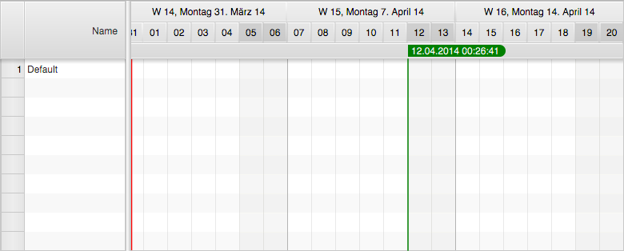
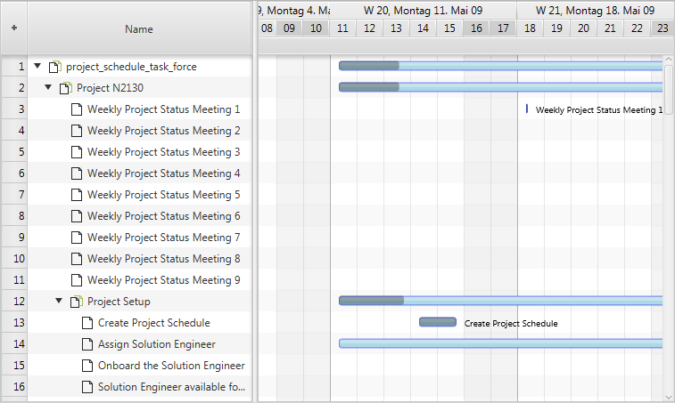
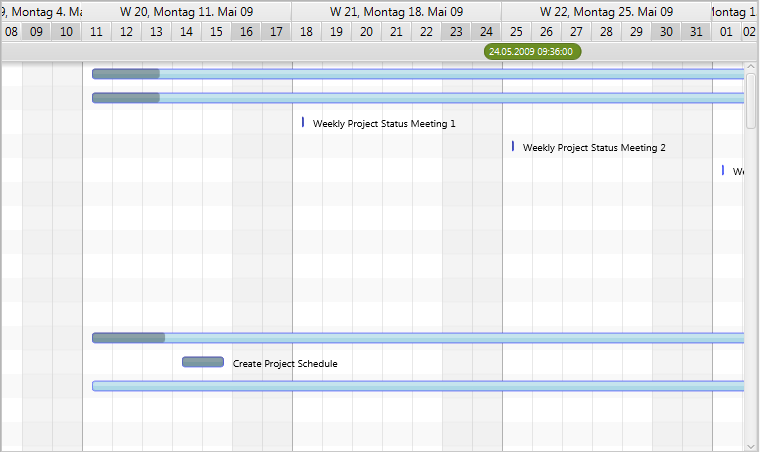
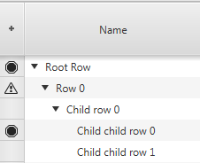
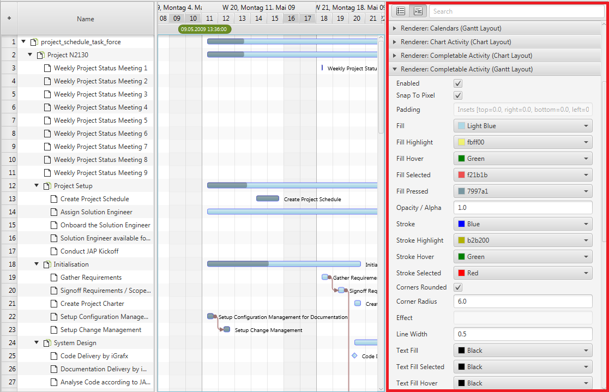
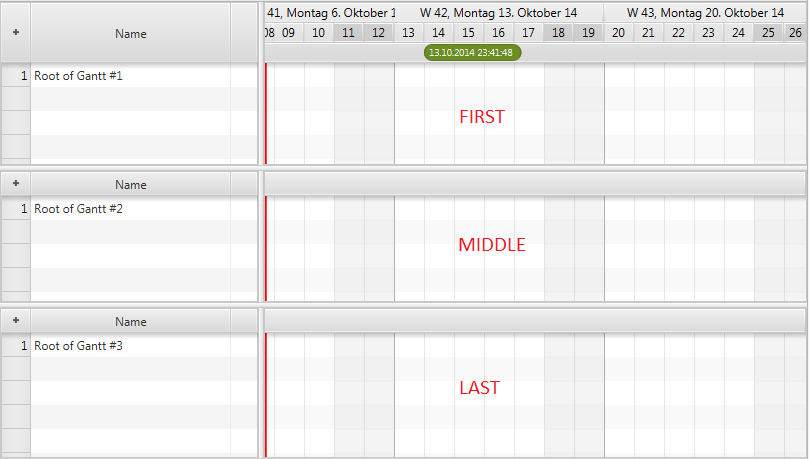

Overview
The GanttChart control is a custom JavaFX control used to visualize any kind of scheduling data along a timeline. The model data needed by the control consists of rows with activities, links between them, and layers to group activities together.
The GanttChart control consists of several complex sub-controls:
| Control | Description |
|---|---|
| TreeTableView | Shown on the left-hand side to display a hierarchical structure of rows. This is the standard tree table view that ships with JavaFX. |
| GraphicsBase | Shown on the right-hand side to display a graphical representation of the model data. |
| Timeline | Shown above the graphics view. The timeline itself consists of two child controls (dateline and eventline) |
| Dateline | Displays days, weeks, months, years, etc... |
| Eventline | Displays various time markers. Also capable of displaying frozen rows (rows that do not scroll vertically). |
The screenshot below shows the initial appearance of an empty GanttChart control.

Master / Detail Panes
The Gantt chart uses two MasterDetailPane instances from ControlsFX for the high-level layout. The primary master
detail pane displays the tree table as its detail node, and the secondary master detail pane initially displays a
property sheet as its detail node. The property sheet is used at development time and can be replaced with any node by
calling setDetail(Node). The property sheet displays a lot of properties that are used by the controls, the renderers,
the system layers to fine-tune the appearance of the control. Many of them can be changed at runtime. The following table
lists methods relevant for working with the master detail panes:
| Method | Description |
|---|---|
| setDetail(Node); | Sets the node that is being shown as the detail node of the secondary master detail pane. |
| getDetail(Node); | Gets the node that is being shown as the detail node of the secondary master detail pane. |
| getPrimaryMasterDetailPane(); | Returns the primary master / detail pane. This pane shows the tree table view as its detail and the secondary master / detail pane as its master. |
| getSecondaryMasterDetailPane(); | Returns the secondary master / detail pane. This pane shows the graphics view as its master and an optional node as its detail. |
Model
The GanttChart control itself doesn't have a model. It is simply providing convenience methods and data structures to
support the underlying controls (tree table view, graphics view). The following table lists the relevant methods:
| Method | Description |
|---|---|
| void setRoot(R row); | Sets the root node for the underlying tree table view control. |
| R getRoot(); | Gets the root node for the underlying tree table view control. |
| ObservableList<Layer> getLayers(); | The list of layers that will be displayed by the graphics view. |
| ObservableList<ActivityLink<?>> getLinks(); | The list of links that will be displayed by the graphics view. |
| ObservableLis<Calendar<?>> getCalendars(); | The list of calendars that will be displayed by the graphics view. |
Display Mode
The displayMode property of the GanttChart control is used to toggle between three different layouts:
- Standard – a layout with the tree table view shown on the left-hand side and the graphics area on the right-hand side
- Table-Only – a layout where the table will fill the entire width of the Gantt chart control
- Graphics Only – a layout where the graphics view will fill the entire width of the
GanttChartcontrol
The display mode can be changed by calling the setDisplayMode() method. The following screenshots show the different
display modes.
Standard Layout

Table-Only Layout

Graphics-Only Layout

Graphics Header
The graphics header node is a replacement for the timeline when the Gantt chart control is being used in a multi Gantt
chart context, for example, when used in a DualGanttChartContainer or a MultiGanttChartContainer.

This node can be set by calling GanttChart.setGraphicsHeader(Node). The node passed to this method can be anything. The
only important thing to be aware of is that the preferred height of this node has to be set to the same value as the
preferred height of the tree table header.
Row Header – the first column in the tree table view is called "row header." This column is provided by the framework
and cannot be removed. By default, it is used to display row numbers but can be reused for other purposes. The RowHeader
class is a subclass of TreeTableColumn with some special logic to it. It supports row resizing and might call back on
a factory to produce its graphic.
Row Header Type - the enumerator RowHeaderType defines the different ways the row header can be used.
- GRAPHIC_NODE – Makes the row header cells display a custom node for each row.

- LEVEL_NUMBER – Makes the row header cells display the level number of the current row (1, 1.1, 1.2, 2, 2.1, 2.2, 2.3, ...).

- ROW_NUMBER – Makes the row header cells display the number of the current row (1, 2, 3, ...).

Row Header Factory – if the GRAPHIC_NODE type is chosen, then the row header will call back on the row header
node factory that is supplied by the GanttChart class. The following example shows how to register a possible
implementation of such a factory.
ganttChart.setRowHeaderNodeFactory(row -> {
public Node call(R row) {
Button delete = new Button("Delete");
delete.setOnAction(evt -> deleteRow(row));
return delete;
}
});
Property Sheet
The default control used for the Gantt chart detail node property is the property sheet from the ControlsFX open source
project. It is used to display the properties of the Gantt chart itself and its subcontrols (timeline, dateline,
eventline, graphics). It also shows the properties of all renderers registered with the controls. The screenshot below
shows the property sheet as it presents itself when set as the detail node of the Gantt chart. It can then be made
visible by calling GanttChart.setShowDetail(true).

When writing your own renderers, you can override the getPropertySheetItems() method and add your own items to the list
of items returned by the superclass.
Other Features
Fixed cell size – the tree table view and the list view of JavaFX both support a property called fixedCellSize. It can
be used to improve the performance of both controls. This is done by setting it to a value other than -1. A value like
that informs the controls that each cell will have the same height, which allows for faster algorithms to be used when
updating the controls. The GanttChart class also defines this property to ensure that the tree table view and
the list view used by it use the same cell size. If set, the Gantt chart will not use the height property of the rows
and will also not allow the user to resize the rows.
Master Timeline – the GanttChart control defines a property called masterTimeLine. This property is used when the Gantt
chart is being used in a multi Gantt chart context (e.g. DualGanttChartContainer or MultiGanttChartContainer). In these
situations it is the timeline of the top Gantt chart that is the basis for rendering weekends, grid lines, etc. Every
Gantt chart still has its own timeline subcontrol, but they will all know which one is the master. This is framework
functionality that applications should normally not interfere with.
ScrollBar Type – the GanttChart control supports different types of scrollbars. The type can be set by calling
GanttChartBase.setScrollBarType(ScrollBarType). The following types are currently available:
NONE- The Gantt chart will never offer any scrollbars. Neither for the tree table view nor the graphics area. A Gantt chart like that could only be scrolled via the keyboard, the mouse wheel, or a touch input device.INFINITE- The Gantt chart will show a regular scrollbar for the tree table view and a scrollbar called TimelineScrollBar which internally uses a PlusMinusSlider (provided by the ControlsFX project). The slider allows for scrolling at different speeds into the past or into the future. This scrollbar does not require a specified scrolling "horizon" (the earliest / latest time to scroll to).FIXED_HORIZON- The Gantt chart will show a regulars scrollbar for the tree table view AND the graphics area. The bounds of the scrollbar are based on the horizon start and end times as defined by the TimelineModel.
ScrollBar Visibility - another configuration option related to scrollbars is the boolean property
autoHideScrollBars. If set to true the scrollbars for the tree table view (the left-hand side) and the graphics area
(the right-hand side) will be placed inside a HiddenSidesPane instance. This container control from ControlsFX can show
or hide controls that have been placed on one of its sides. In this case the scrollbars will be placed on the "bottom"
side, and they will only appear when the user moves the mouse cursor close to the edge.
Position – the position property of the GanttChart class is used to inform the Gantt chart where it is located
within a multi Gantt chart context (e.g. DualGanttChartContainer or MultiGanttChartContainer). Possible values are:
ONLY- the Gantt chart is the only one. This is the default value and will not change if not used in a multi Gantt chart context.FIRST- the Gantt chart is shown at the top of the container.MIDDLE- the Gantt chart is not the first and not the last one. It is also not the only one.LAST- the Gantt chart is shown at the bottom of the container.
The screenshot below shows three charts in a MultiGanttChartContainer and their position values.

Factory Methods – there are several protected factory methods used for creating the subcontrols. These methods can be overridden to create subclasses of these controls.
TreeTableView createTreeTable();- Creates the tree table view shown on the left-hand side of the Gantt chart. A typical use case for replacing this table is when you already have a tree table view specialization with advanced filtering or interaction options. You might want to use the same tree table view that your application is already using in other places.Timeline createTimeline();- Creates the timeline.GraphicsBase createGraphics();- Creates the graphics view. A use case for replacing the standard one might be that your application adds a couple of nodes to the graphics view. Maybe some kind of overlap on top of the graphics (e.g., a radar).RowHeader createRowHeader();- Creates the row header column for the tree table view.
GattChartLite
A GanttChartLite is basically the same as a GanttChart, except that it does not show a TreeTableView on its'
left-hand side. This type of chart is useful when an application doesn’t have a need to show a lot of details for each row.
Often just the name of the row (e.g., aircraft name) is enough. In this case one can choose the lite version in
combination with row headers and the row header factory.
Gantt Chart Containers
A Gantt chart can be used standalone or inside a MultiGanttChartContainer or DualGanttChartContainer. When used in one
of these containers, the position of the Gantt chart becomes important. The control can be the first chart, the last
chart, the only chart, or a chart somewhere in the middle. A "first" or "only" chart always displays a timeline. A
"middle" or "last" displays a special header (see setGraphicsHeader()). The containers are also the reason why the
control distinguishes between a timeline (getTimeline()) and a master timeline (getMasterTimeline()).
The master timeline is the one shown by the "first" chart, while the regular timeline is the one that belongs directly
to this instance.
FlexGanttFX ships with several containers capable of displaying multiple Gantt charts at the same time.
MultiGattChartContainer,MultiGattChartLiteContainer- a container capable of displaying multiple instances of aGanttChart/GanttChartLiteand keeping their layouts (same table width, same timeline) and their scrolling and zooming behavior in synch. The screenshot below shows the initial appearance of an empty multi Gantt chart container.

DualGanttChartContainer,DualGanttChartLiteContainer- a specialization ofMultiGanttChartContainercapable of displaying exactly two instances ofGanttChartand keeping their layouts (same table width, same timeline) and their scrolling and zooming behavior in synch. The container distinguishes between a primary and a secondary Gantt chart, where the secondary Gantt chart is located in the detail node section of aMasterDetailPane. It can be hidden or shown on demand. Each one of the two Gantt charts can have its own header and footer. Initially, only the primary header and the secondary footer are used. The header for displaying an instance ofGanttChartToolBarand the footer for displaying an instance ofGanttChartStatusBar. The screenshot below shows the initial appearance of an empty Dual Gantt chart control.

QuadGanttChartContainer,QuadGanttChartLiteContainer- a specialization ofMultiGanttChartContainercapable of displaying exactly four instances ofGanttChartand keeping their layouts (same table width, same timeline) and their scrolling and zooming behavior in synch. The container distinguishes between the Gantt chart locationsUPPER_LEFT,UPPER_RIGHT,LOWER_LEFT,LOWER_RIGHT. The timelines of theUPPER_LEFTandLOWER_LEFTGantt charts are scrolling in synch and the timelines of theUPPER_RIGHTandLOWER_RIGHTare scrolling in synch.